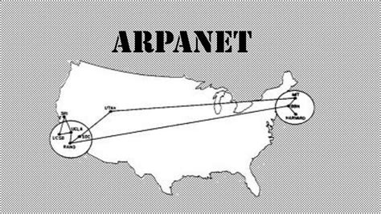

História das Redes de Computadores
Três momentos importantes na evolução das redes.
Voltar à página inicial
ARPA e ARPANET
A ARPANET foi a primeira rede de computadores e marcou o início da Internet.

Depois da ARPANET
-
Criação do TCP/IP:
Tornou possível a comunicação entre diferentes computadores e deu origem à Internet moderna.
-
World Wide Web:
Criada nos anos 1990, permitiu a criação de sites e popularizou o uso da Internet.